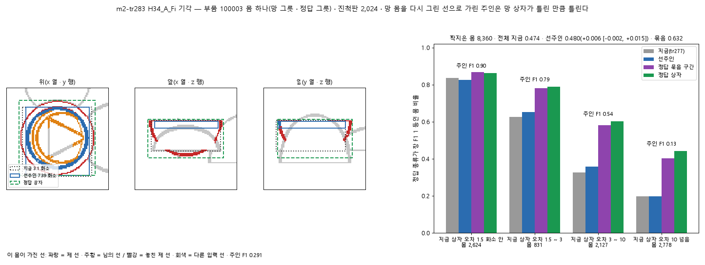

실험 m2_tr0283_h034_선주인
목표 G1.2 view 모음 → 파츠별 CAD code(CadQuery · 그 전 「3 면도 → 파츠별 CAD」 · 지금 M2 는 위 · 앞 · 옆 고정 세 장만 받음 → 아무 각도 N 장으로 바꿀 것 · 11-20) · G1 첫 제품 — 피규어 · 메카 사진 여러 장 + 치수 → 숨은선 3 면도 + 파츠별 CAD · G0 임의의 이미지 → CAD 코드 · 빌린 가정 3: 생성기기하 · 정답3D · 정사영 · 갚는 계획: 탐색 · 생성기 부품 · 진척판 고정 시험지 2,024(맞춘 상자 = 모델277 600 + f7 모델279 1,424) · 옛 생성기 고정(커밋 3519cfe9) — 오르면 선 주인 상자로 f7 tr0284 몸 분류기 자르기에 붙임 · 안 오르면 선 주인을 배우는 길(사용자 답 뒤) → 흐린 view · m1 view 로 버팀(Sc) · 목표 시험지 값: 안 잼 (!)
망 몸 전부를 다시 그린 선으로 입력 선마다 주인 몸을 가리고(학습 없음) 몸마다 제 선의 공유 축 구간으로 상자를 잡으면, 다시 그림 창 점수가 정답 종류를 1 등으로 꼽는 몸이 오르나?
판정 · H34 기각(선주인 − 지금 +0.006 [-0.002, +0.015] · 기각선 위 < 0.03) — 망 몸 전부를 같이 다시 그린 선으로 가린 선 주인은 정답 묶음과 F1 0.60 · 띠별로 망 상자 오차를 그대로 따라감(0.90 → 0.13) — 망이 틀린 몸에서 다시 그림은 새 정보를 못 줌(되풀이도 학습 부품 시험에서 정답 상자부터 흐려짐) · 정답 묶음 구간이면 0.632 라 구간 셈은 여전히 됨 · 다음: 망 상자에 기대지 않는 선 주인 — 입력 선 자체의 묶음(닫힌 윤곽 · 이어짐 · 세 장 구간 맞춤) 또는 선 화소 몸 번호 학습(사용자 답 뒤)
| 가설 | 주장 | 결과 | 근거 |
|---|---|---|---|
| H34 | 망 몸을 같이 다시 그린 선으로 입력 선 주인을 가려 잡은 공유 축 구간 상자로 다시 그리면 정답 종류 1 등 비율이 지금보다 오른다 | 기각 | 지금 0.474 · 선주인 0.480 · 면주인 0.479(+0.005 [-0.003, 0.013]) · 묶음구간 0.632 · 정답상자 0.649 · 주인 F1(정답 묶음 선 대) 중앙값 선주인 0.597 · 면주인 0.602 · 상자 오차 중앙값(화소) 지금 5.09 · 선주인 5.03 · 묶음구간 0.58 · 1.5 화소 안 0.314 · 0.248 · 0.912 · 진척 자리짝종류(창 F1 1 등 종류) 망 0.531 · 지금 0.477 · 선주인 0.483 · 묶음구간 0.630 · 정답상자 0.640 · 선주인 − 망 -0.048 [-0.060, -0.037] · 자 검사: 앞 600 지금 · 묶음구간 · 정답상자 0.467 · 0.630 · 0.647 = tr281 · 망 그대로 0.531 = 진척판 바탕 · 다시 지은 그림 대 저장 입력 F1 중앙값 1.0 · 오류 0 |
분석
한 줄로
물음: 망이 낸 몸을 전부 같이 다시 그리고, 입력 선마다 가장 가까운 다시 그린 선의 몸을 주인으로 삼아 몸마다 제 선으로 상자를 잡으면, 다시 그림 점수가 정답 종류를 1 등으로 꼽는 몸이 오르나?
답: 거의 안 오른다 — 판정은 기각. 0.474 → 0.480(+0.006 [-0.002, +0.015]). 이렇게 가린 선 주인은 망 상자가 틀린 만큼 같이 틀린다(주인 F1 0.90 → 0.13). 망이 틀린 몸에서는 다시 그림이 새 정보를 주지 못한다.
왜 이 실험을 했나
tr281 에서 공유 축 구간 셈 자체는 된다는 것을 봤다. 정답 묶음 선(어느 선이 어느 몸 것인지 정답으로 줌)으로 상자를 잡으면 0.630 으로, 정답 상자 0.647 에 거의 닿았다. 막힌 곳은 선 주인 가리기였다. 선 화소마다 몸 번호를 배우는 길은 사용자 답을 기다리는 중이라, 학습 없는 길을 먼저 쟀다. 망 몸을 같이 다시 그리면 맞닿은 선 · 가림도 「처음 맞은 몸」 으로 가를 수 있으니 이웃 선에 덜 속을 거라고 봤다. 우리 목표는 그림 → CAD 코드이고, 지금 병목은 몸 나누기다.
바꾼 것 하나
몸 상자 하나만 바꿨다. 망 몸 전부를 tr277 맞춘 상자로 같이 다시 그려, 보이는 선 화소마다 처음 맞은 몸 번호를 붙인다. 입력 선 화소마다 10 화소 안에서 가장 가까운 번호 붙은 선의 몸이 주인이다. 몸마다 제 선의 공유 축 구간 상자를 잡는다(tr281 정답 묶음 팔과 같은 셈). 나머지(망 축 · 정형 모양 · 7 종류 창 점수 · 다른 몸은 지금 상자)는 tr281 과 같고, 시험만 600 → 진척판 2,024 로 넓혔다.
결과

| 선주인 − 지금 | 대조(지금) | 목표 | 넘었나 | |
|---|---|---|---|---|
| 정답 종류 1 등 비율(짝지은 몸 8,360) | +0.006 [-0.002, +0.015] | 0.474 | ≥ +0.08 · 아래 > 0 | 아니오(기각) |
「정답 종류 1 등 비율」 은 몸 자리에 7 종류를 하나씩 넣어 다시 그렸을 때, 그 몸 근처에서 입력과 가장 같은 종류가 정답인 몸의 비율이다. 무작위면 0.14 다. 「주인 F1」 은 그 몸이 가진 입력 선과 정답 묶음 선이 1 화소 안에서 얼마나 겹치는지다.
왜 이렇게 나왔나
확인한 것
- 주인 F1 은 전체 중앙값 0.60 이다. 망 상자 오차 띠로 나누면 1.5 화소 안 0.90 · 1.5 ~ 3 0.79 · 3 ~ 10 0.54 · 10 넘음 0.13 이다. 다시 그린 선이 망 상자 자리에 있으니, 망이 틀린 몸은 남의 선을 가져오고 제 선은 놓친다.
- 망이 이미 잘 놓은 몸(1.5 화소 안 2,624)은 선 상자로 바꾸면 오히려 나빠진다(상자 오차 0.36 → 0.99 · 1 등 0.837 → 0.825). 숨은 면은 선이 없고, 선은 화소 가운데라 반 화소씩 안쪽이다.
- 3 ~ 10 화소 몸(2,127)만 조금 오른다(0.327 → 0.357 · 정답 묶음이면 0.582). 10 화소 넘는 몸(2,778 · 33 %)은 그대로 0.197 이다(정답 묶음이면 0.402).
- 보이는 면의 주인으로 가른 같이 팔(면주인)도 0.479 로 같다. 가르는 규칙이 아니라 다시 그린 자리가 문제다.
- 처음엔 「새 상자로 다시 그려 3 번 되풀이」 로 짰다. 그런데 학습 부품 자기 시험에서 정답 상자로 출발해도 되풀이마다 흐려져(0.71 → 2.61 화소) 돌리기 전에 한 번으로 바꿨다. 선 상자는 메시 상자와 달라서, 되먹이면 숨은 면 쪽은 줄고 맞닿은 몸은 커진다.
짐작 (아직 확인 안 함)
- 선 주인은 망 상자에 기대지 않는 곳에서 와야 한다. 입력 선 자체의 묶음(닫힌 윤곽 · 이어짐 · 세 장 구간이 서로 맞는 선 무리)이나, 선 화소마다 몸 번호를 배우는 것이다.
한계
- 한 번만 돌렸다. 되풀이는 학습 부품 15 개(몸 67)로만 보고 뺐다.
- 망이 몸 수를 맞힌 부품은 78 % 다. 망이 빠뜨린 몸의 선은 가까운 망 몸에 붙어 상자를 부풀린다(따로 세지 않음).
- 창이 상자를 따라가므로 창 자리 몫이 같이 섞인다(tr280 · 281 과 같은 셈). 다른 몸은 지금 상자 그대로다.
배운 것과 다음
망 몸을 다시 그려 가린 선 주인은 망이 이미 아는 것만 돌려준다 — 선 주인은 망 상자 밖에서 와야 한다.
- 학습 없는 다음 길: 입력 선만으로 몸 후보 묶음을 만든다(닫힌 윤곽 · 세 장 공유 축 구간이 맞는 선 무리). 정답 묶음 대비 주인 F1 을 띠별로 잰다.
- 배우는 길: 선 화소 몸 번호(사용자 답 뒤).
- f7 tr284(망 상자 자른 몸 분류기 × 망 확률 · 진척판 0.590)는 상자가 맞을수록 좋아진다. 위 길로 상자가 맞으면 그 곱 고르기에 바로 끼운다.
실험 기록
- 카드(돌리기 전 커밋 1d98ec7c · H34_A_Fi · 식 · 판정식) · 선주인283.py(시험 · 흐름 · 재기 · 결과그림) · 번호는 m2 담당 f7 세션이 잡아 줌 · 맞춘 상자 1,424 는 f7 모델279.
- 돌리기 전 바꿈(학습 부품 번호 < 100000 · 몸 3 개 이상 앞 15 · 몸 67): 3 번 되풀이 · 6 화소 → 정답 상자에서 출발해도 0.71 → 1.11 → 1.68 → 2.11 → 2.61 화소 · 「같이 가짐(틈 1 · 2 화소)」 더 나쁨 · 반 화소 넓힘으로도 안 풀림 → 한 번 · ±5 흔든 상자 2.67 → 1.84 · ±10 5.33 → 3.54(6 화소) · 3.46(10 화소) → 10 화소. 시험 부품은 흐름 그림 한 부품(100002)만 봄.
- 자기 시험: 번호 붙여 그린 선 = 빠른 그리기 선(화소까지 같음) · 정답 몸 자리 주인 F1 중앙값 0.866(정답 묶음은 맞닿은 선을 두 몸이 다 가져 1 보다 낮음) · 그 상자 오차 0.71 화소.
- 자 검사: 앞 600 의 지금 · 묶음구간 · 정답상자 0.467 · 0.630 · 0.647 = tr281 · 망 종류 그대로 자리짝종류 2,024 = 0.531(진척판 바탕) · 다시 지은 그림 = 저장 입력(F1 중앙값 1.0) · 2,024 부품 오류 0.
- 같이 잰 것: 진척 자리짝종류(창 F1 1 등 종류) 망 0.531 · 지금 0.477 · 선주인 0.483 · 면주인 0.481 · 묶음구간 0.630 · 정답상자 0.640 · 선주인 − 망 -0.048 [-0.060, -0.037] · 상자 1.5 화소 안 몫 지금 0.314 · 선주인 0.248 · 묶음구간 0.912 · 망 축 틀린 몸 2,626 은 정답 상자여도 0.333.
- 판정 뒤 띠별(지금 상자 오차): 나아진 몸(0.25 화소 넘게) 몫 1.5 안 0.05 · 1.5 ~ 3 0.38 · 3 ~ 10 0.43 · 10 넘음 0.37 / 나빠진 몸 0.72 · 0.45 · 0.38 · 0.41.